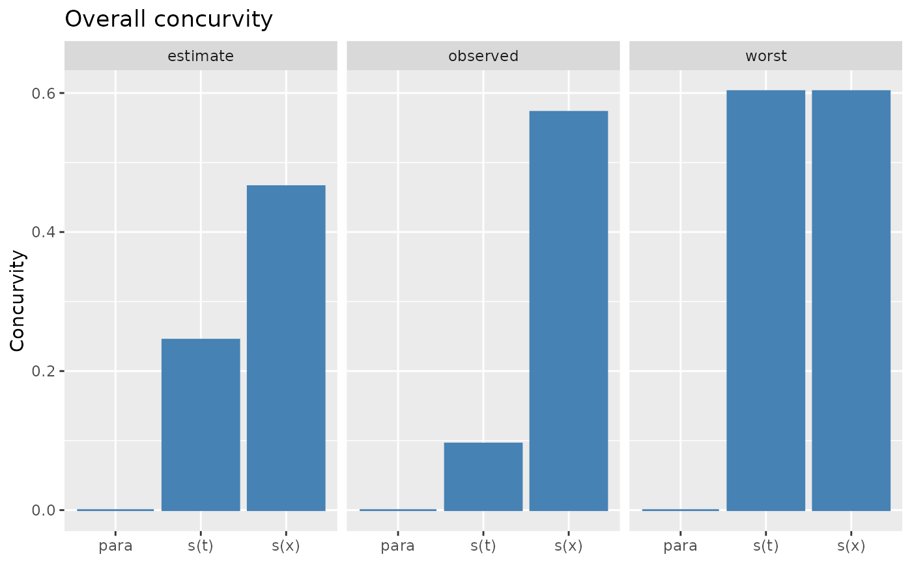
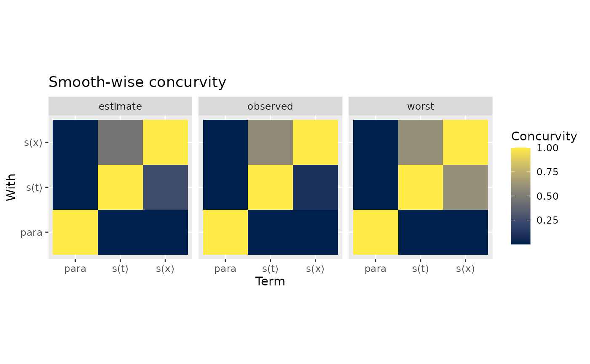

Concurvity of an estimated GAM
Examples
## simulate data with concurvity...
library("tibble")
load_mgcv()
set.seed(8)
n <- 200
df <- tibble(
t = sort(runif(n)),
x = gw_f2(t) + rnorm(n) * 3,
y = sin(4 * pi * t) + exp(x / 20) + rnorm(n) * 0.3
)
## fit model
m <- gam(y ~ s(t, k = 15) + s(x, k = 15), data = df, method = "REML")
## overall concurvity
o_conc <- concrvity(m)
draw(o_conc)

## pairwise concurvity
p_conc <- concrvity(m, pairwise = TRUE)
draw(p_conc)
